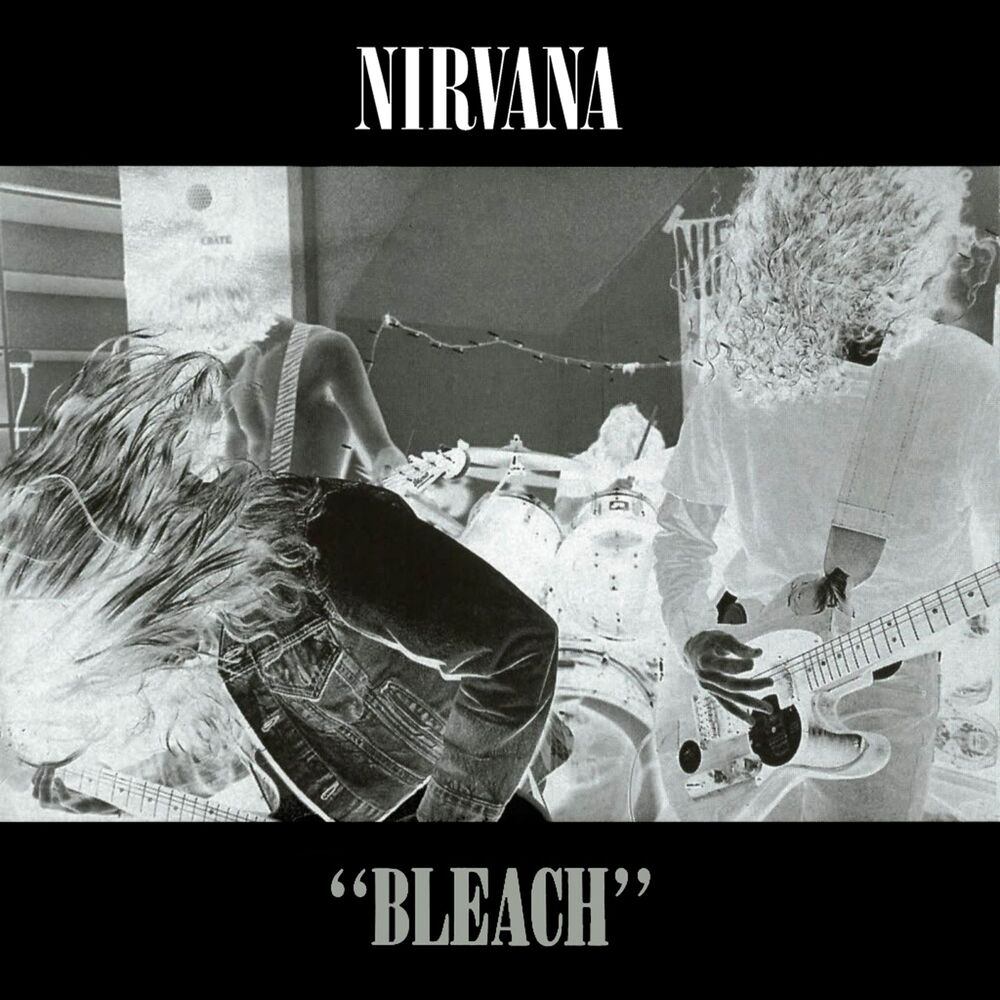
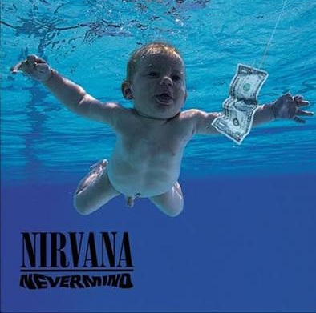
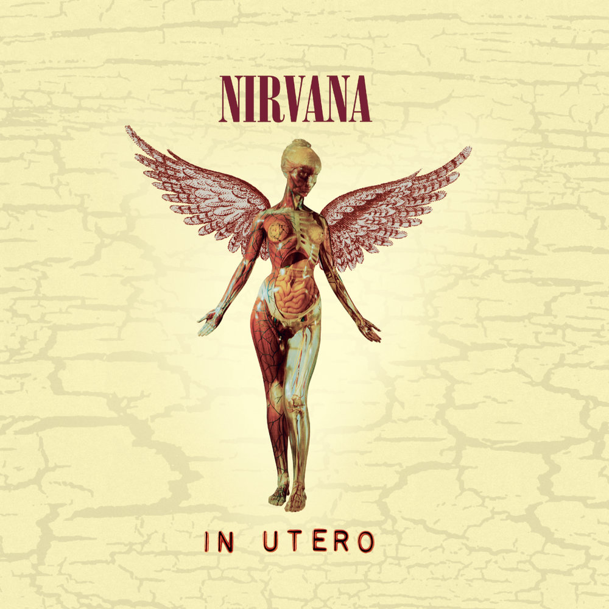

Дискография
Студийные альбомы, сборники и концертные записи группы.
| Альбом | Год | Лейбл | Хиты |
|---|---|---|---|
| Bleach | 1989 | Sub Pop | About a Girl |
| Nevermind | 1991 | DGC | Smells Like Teen Spirit |
| Incesticide | 1992 | DGC | Sliver |
| In Utero | 1993 | DGC | Heart-Shaped Box |
| MTV Unplugged in New York | 1994 | DGC | About a Girl (live) |
Bleach (1989)

Дебютный альбом группы, записанный всего за 606 долларов Пластинка вышла сырой и тяжёлой — ближе к сладжу и панку, чем к будущему гранжу. Именно на Bleach прозвучал первый большой хит Nirvana — «About a Girl», написанный Куртом под влиянием ранних The Beatles.
За барабанами на записи сидел Чад Ченнинг — он был в составе группы с 1988 по 1990 год и ушёл перед записью Nevermind. Тем не менее Bleach стал важной вехой: он закрепил Nirvana в андеграундной сцене Сиэтла и открыл им дорогу к большой сцене.
Nevermind (1991)

Самый известный альбом группы. Содержит хит «Smells Like Teen Spirit», который стал гимном поколения и до сих пор звучит на всех рок-радиостанциях мира.
Именно с Nevermind гранж перестал быть музыкой андеграунда и стал частью массовой культуры. После выхода альбома звукозаписывающие лейблы бросились искать «новых Nirvana», а мода на фланелевые рубашки и рваные джинсы охватила весь мир.
In Utero (1993)

Третий и последний студийный альбом группы, записанный со Стивом Альбини — продюсером, известным своей любовью к сырому, «непричёсанному» звуку. Курт называл его «самым честным» релизом Nirvana: без глянца и продюсерской полировки, которые были на Nevermind.
Альбом вышел на лейбле DGC в сентябре 1993 года и сразу разделил слушателей: часть фанатов ждала «второго Nevermind», а получила тяжёлый, местами агрессивный материал. Тем не менее пластинка дебютировала на первой строчке Billboard 200 и получила платиновый статус.